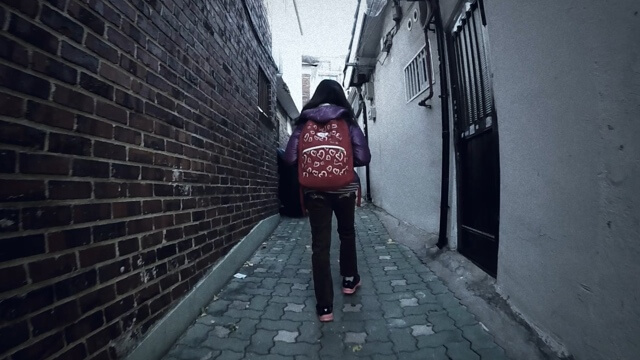
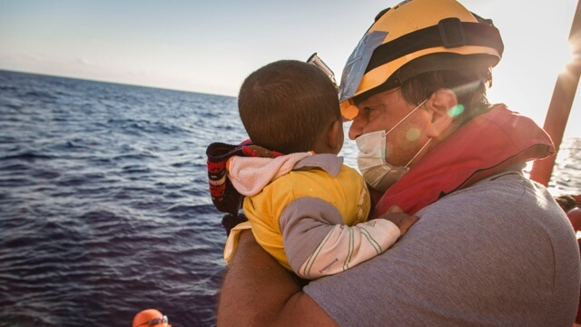
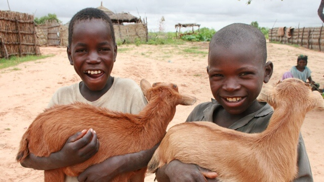
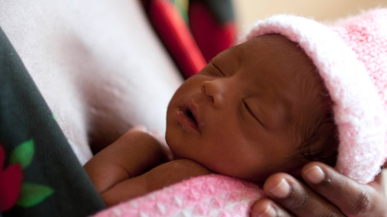
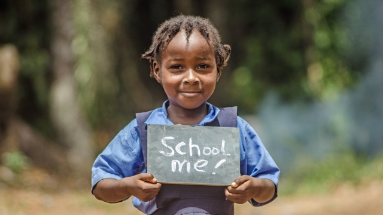

“괜찮아요...별로 안 추워요.”
한 겨울에 입기엔 너무 얇은 점퍼, 간신히 손목을 가리는 짧은 소매. 그리고 그 헤어진 소매 끝이 터질까 단단히 붙여놓은 테이프. 감당이 안 되는 난방비 부담에 보일러를 틀 수조차 없습니다.
연락이 끊긴 부모님을 대신해주는 유일한 가족, 할머니... 그런 할머니가 폐암수술을 받고 아프신 게 매일 같은 옷을 입는다는 친구들의 놀림보다 속상하고, 추위보다 더 무섭습니다.
효정이가 할 수 있는 유일한 겨울 준비, 테이프를 붙이는 일.
조금이라도 한기를 막아보려 할머니를 도와 구석구석 테이프를 붙여 보지만, 한 겨울 추위를 막기에는 역부족입니다.
효정이와 같은 국민기초생활보장수급 가구는 전국적으로 약 100만 가구가 있습니다.
여러분의 손길로 이들에게 따뜻한 겨울 의복과 난방비를 지원해주세요.
사진 ⓒSave the Children

"난민 아이들을 바다에서 구조해 주세요."
지중해에서는 오늘도 목숨을 건 탈출이 이어집니다. 살기 위해 목숨을 걸고 작은 보트에 의지해 망망대해를 건너는 사람들. 2016년 한해 36만 명이 바다를 건너 유럽으로 탈출했고, 이중 4,800여명이 바다 위에서 목숨을 잃었습니다.
지중해를 건너는 난민 아동 가운데 90%는 부모의 보살핌 없이 홀로 여정을 감행하고 있습니다. 차디찬 바다에서 아동들이 더 이상 희생당하는 일이 없도록 도움의 손길을 보내주세요.
어떻게 도울 수 있나요?
난민아동 수색 구조선을 지원해주세요.
난민 구조선은 전문 인력들이 구조를 필요로 하는 난민을 수색하고 구조하며, 구조된 아동을 긴급치료하고 보호하는 활동을 합니다.
여러분의 소중한 후원금은 구조선 내 긴급구호 물품을 구비하고 의료진을 배치하는 등 가장 필요한 현장에 지원됩니다.
험난한 바닷길에 내던져진 아이들에게는 지금 여러분의 도움이 절실히 필요합니다.
사진 ⓒJonathan Hyams/Save the Children

"아프리카에 빨간 염소를 보내주세요!"
가뭄과 기근, 널뛰는 식량 가격, 기후 변화로 인해 아프리카 어린이들과 가정이 어려움을 겪고 있습니다.
이들에게 주요 생계 수단인 염소를 보내주어 영양부족으로 인한 위기를 극복하고 가정 생계를 회복할 수 있도록 지원하는 프로그램입니다.
왜 염소일까요?
염소는 건조한 날씨에도 소량의 먹이만 먹고 살아남을 수 있어 소에 비해 사육이 용이합니다. 염소는 18개월 이후부터 번식이 가능하고 1년에 3~4마리의 새끼를 낳아 가정경제에 보탬을 줄 뿐만 아니라 매일 신선한 염소 젖을 아동들에게 제공하여 풍부한 미세영양소와 단백질을 보충해 줍니다. 염소는 정착민과 유목민 모두 일상적인 생계수단으로 활용하고 있으며, 평균 수명은 10년이 넘습니다.
후원자님의 기부금은 매일 마실 신선한 우유와 곡식을 구매할 돈(새끼 염소를 팔아 곡식 구매), 새끼를 키워 번식시키는 가정 소득원으로 확대 됩니다. 한 마리의 염소 구입비용 4만원의 가치가 적게는 약 5배에서 30배까지 불어날 수 있습니다.
아프리카 어느 지역에 염소가 전달되나요?
우선적으로 서아프리카 니제르, 마라디 지방의 테사와지역에 염소 배분, 백신접종, 식량공급 등의 프로그램으로 쓰입니다. 그 외에도 아프리카 및 아시아 지역에 식량 접근성이 미비해 굶주림과 영양실조를 겪는 아동에게 시급한 지원이 필요한 경우, 여러분의 후원금은 긴급구호 및 보건영양 프로그램에 사용됩니다.
사진 ⓒhangeumsun/Save the Children

"아기들이 5세까지 생존할 수 있도록 도와주세요."
매년 전세계 690만 명의 5세 미만 영유아가 사망하고, 이 중 약 5백만 명은 너무나 쉽게 예방 및 치료가 가능한 질병으로 사망합니다.
또, 매년 거의 100만 명의 신생아가 태어난 당일에 사망합니다.
저개발국에서는 기본적인 의료시설이 거의 없기 때문에 산모가 대개 집에서 아기를 낳게 되고, 따라서 환경이 비위생적이거나 의료기자재와 의약품이 부족해서 아기가 쉽게 사망에 이르게 됩니다.
생존율을 높이기 위해서는 멀리 있는 산모에게 적시에 도움을 줄 수 있도록 지역보건요원이 쉽게 갈 수 있는 여건을 마련해야 하며, 신생아에게 필요한 물품, 기구 등을 갖추고 있어야 합니다.
신생아 패키지에는 5세 미만 영유아 살리기 필수약품 5종, 말라리아방지모기장, 신생아보온담요, 산모와 태아를 살리는 보건요원 양성 비용 일체가 포함돼 있습니다.
도움이 절실한 전 세계 산모와 아기들에게 꼭 필요한 물품과 프로그램을 전달할 수 있도록 도와주세요.
사진 ⓒColin Crowley/Save the Children

“나는 왜 학교에 갈 수 없죠?”
글을 읽고 쓸 줄 모르는 전 세계 성인 중 약 67%가 여성. 조혼에 내몰리는 18세 이하 여아는 하루 41000명. 가사노동 아동의 75%는 여자아이.
빈곤과 사회적 악습으로 교육의 기회를 빼앗긴 여아들이 차별없이 학교에 가고, 나아가 모든 아이들이 질적인 기초 교육을 받을 수 있도록 따뜻한 손길을 내밀어주세요.
후원자님의 기부금은 아이들을 위한 교육 시설과 수준 높은 교사 양성, 학습 프로그램을 제공하기 위해 사용됩니다.
모든 아이들은 교육을 받을 권리가 있다. 초등 교육은 무료로 제공되어야 한다.
- 유엔아동권리협약 제 28조
교육 환경이 열악해 학업을 중도에 포기하는 여자 아이들이 많은 아프리카 4개국. 코트디부아르, 라이베리아, 시에라리온, 우간다 등을 중심으로 아동과 학부모, 교사, 지역 사회와 정부의 변화를 이끌어냅니다. 아이들이 학교에서 꿈을 꿀 수 있도록 도움을 전해주세요.
사진 ⓒT.Trenchard/Save the Children
